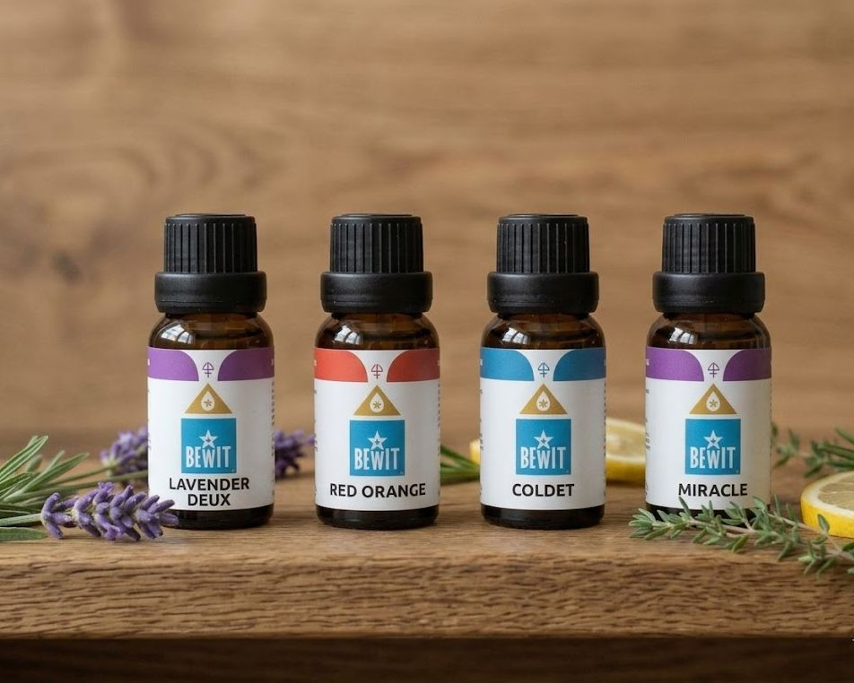

Nevíte si rady s výběrem? Projděte si naši sekci Témata — seřadili jsme oleje podle situací a pocitů, ne podle abecedy. Najdete tam to pravé snáz.
Procházet témata →
📖 Blog · květen 2026
jednoduchý návod pro začátečníky
Nevíte, kde začít? Nabídka je obrovská a snadno se v ní ztratíte. Poradím vám, jak vybrat ten první olej — jednoduše, bez stresu.

Pamatuji si, jak jsem stála nad katalogem a nevěděla, kde začít. Levandule, bergamot, tea tree, kadidlo... každý olej zněl lákavě a já chtěla všechno najednou. Nakonec jsem si koupila tři oleje, které jsem pak měsíc nevyužila, protože jsem nevěděla, co s nimi.
Proto vám doporučuji začít jinak — ne od oleje, ale od sebe.
Esenciální oleje nejsou sbírka — jsou to nástroje. Každý má své místo a svůj čas. Než si vyberete olej, zkuste si odpovědět na jednu otázku: Co mě teď nejvíc trápí nebo co chci zlepšit?
Začněte s levandulí nebo přímo směsí Deep Sleep. Pár kapek do difuzéru před spaním a rozdíl pocítíte hned první noc.
Váš první olej by mohl být bergamot — jemný, citrusový a skvělý na uvolnění napětí. Nebo zkuste naše tipy na stres.
Levandule. Vždy levandule. Je bezpečná, všestranná a každý ji miluje. Pokud si chcete koupit jen jeden olej, ať je to ona.
Nekupujte hned pět olejů. Kupte jeden, naučte se ho používat a nechte ho, aby vám ukázal, co umí. Teprve pak přidejte další. Tahle cesta je pomalejší, ale funguje — protože každý olej skutečně poznáte.
Nejlepší první olej není ten nejdražší ani nejoblíbenější. Je to ten, který odpovídá na vaši konkrétní potřebu právě teď.
Na kvalitě záleží víc, než si myslíte. Levné oleje z drogerie jsou často ředěné nebo syntetické — a pak se divíme, že nic necítíme. Já používám výhradně oleje BEWIT — česká firma, 100% přírodní, bez příměsí. Mám s nimi vlastní zkušenosti a věřím jim.
Nevíte si rady s výběrem? Projděte si naši sekci Témata — seřadili jsme oleje podle situací a pocitů, ne podle abecedy. Najdete tam to pravé snáz.
Procházet témata →